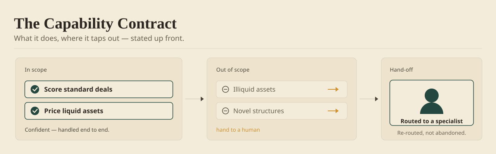

The Act / Review / Ignore rule
One score, one action. An unexplained 87% is a shrug with decimals — it tells the user how the model feels and nothing about what to do. Every AI output should resolve to an explicit next state; in the products I’ve shipped, three verbs covered the production cases: act, review, or ignore.
loop.js
Four of these patterns exist as a zero-dependency JavaScript module, so the decisions can be tested instead of debated: which verb a score becomes, whether its confidence has earned belief (Brier score, expected calibration error), when to refuse to answer, and what to show while the model thinks. Forty-two assertions, running in your browser.

Confidence Score Patterns
Five ways to put a number on certainty — numeric, color, language, composite — and when each one earns or burns trust.

AI Failure States
What the screen says when the model can't deliver, and how saying it honestly keeps users from leaving.

ML Explainability
Showing non-technical people why the machine decided, at a depth they can use without a stats degree.

Human-in-Loop Patterns
Keeping the person in command when the stakes outgrow the model's confidence.

Provenance & Citations
Tracing every AI claim back to the exact source — so a person acts on what they can open, not a summary.

The Capability Contract
Saying what the system can't do, up front — the honest "no" that makes the confident answer believable.

Calibration & Track Record
Showing whether the confidence has actually been right before, so trust is earned, not assumed.

Reversibility
Making the model's suggestion cheap to walk back, so people dare to act on it.
Google's PAIR guidebook and Microsoft's HAX toolkit map this territory from the research side — read them; they're excellent, and several patterns here have cousins there. This library doesn't compete with the lab. It's the production-side report: what those guidelines don't tell you about week three, when users have stopped reading the explanation chips and started gaming the confidence threshold.
What's distinctly mine: the Act / Review / Ignore rule — a score never reaches the screen without resolving to a verb; abstention treated as a shippable feature, not an error state; the override captured as structured data the system learns from; and every pattern here priced by a product that actually shipped. Each page also says when not to use the pattern — the discipline that separates a reference from a sales pitch.
Maheshwari, A. (2026). A Field Guide to Trust: AI Design Patterns. arpitmaheshwari.com/patterns/.
Prefer it as a book? The same patterns run as live demos in the field guide →